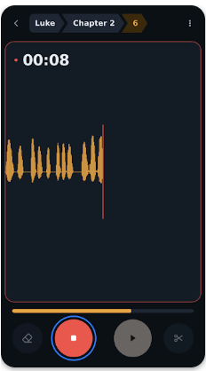
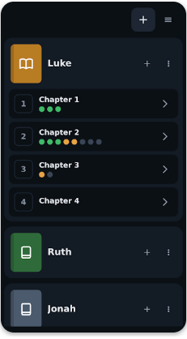
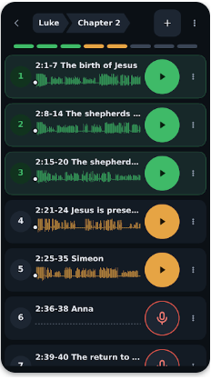
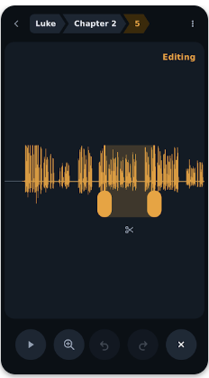

Home / translationCore Mobile
translationCore Mobile
One passage at a time, on the phone you already have. Works offline.

Record by book, chapter, and segment. Listen back, fix, and share, all on your phone.
Once installed, no internet needed.
No accounts, no ads, and no tracking.
Large icon buttons, built for teams who work by ear.
From unfoldingWord, shaped by facilitators and testers.



Ask by voice or text, listen to the guidance, then return to translationCore Mobile to record.
Try BT Servant →Search “translationCore Mobile” on Google Play.
Android 7.0 or later, with WebView up to date.
Questions? Contact unfoldingWord · Source on GitHub